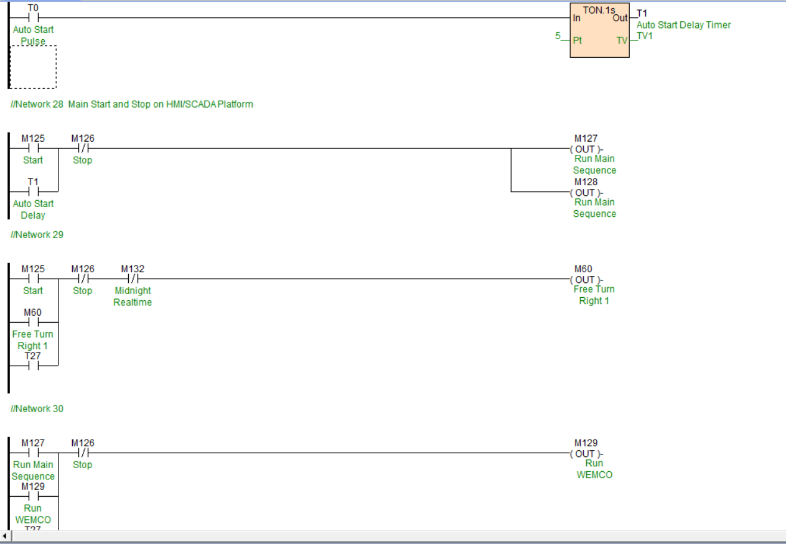
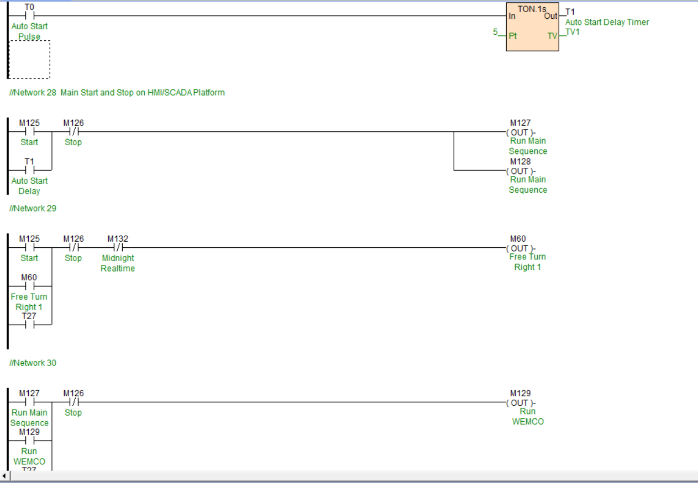

Smart Traffic Light Control System
This project demonstrates a comprehensive, real-time control system for a smart traffic light, combining renewable energy, intelligent traffic detection, and robust programming. The system was designed to increase efficiency and reliability while operating autonomously off-grid.
The objective was to move beyond simple, timed traffic lights and create an intelligent control system that could adapt to real-time traffic conditions. A core requirement was for the system to be energy-independent, ensuring maximum uptime without relying on a constant external power supply.
I programmed a Haiwell PLC to read inputs from smart cameras and make dynamic decisions. The user interface was designed using the Haiwell HMI. Cloudbox smart cameras handled traffic detection, while solar panels and batteries ensured uninterrupted operation.
Tools & Tech Stack:
PLC Programming & Control Systems
HMI Design & User Interface (Haiwell)
Sensor Integration: Smart Cameras
Renewable Energy: Solar + Battery System
System Architecture & Integration


 
